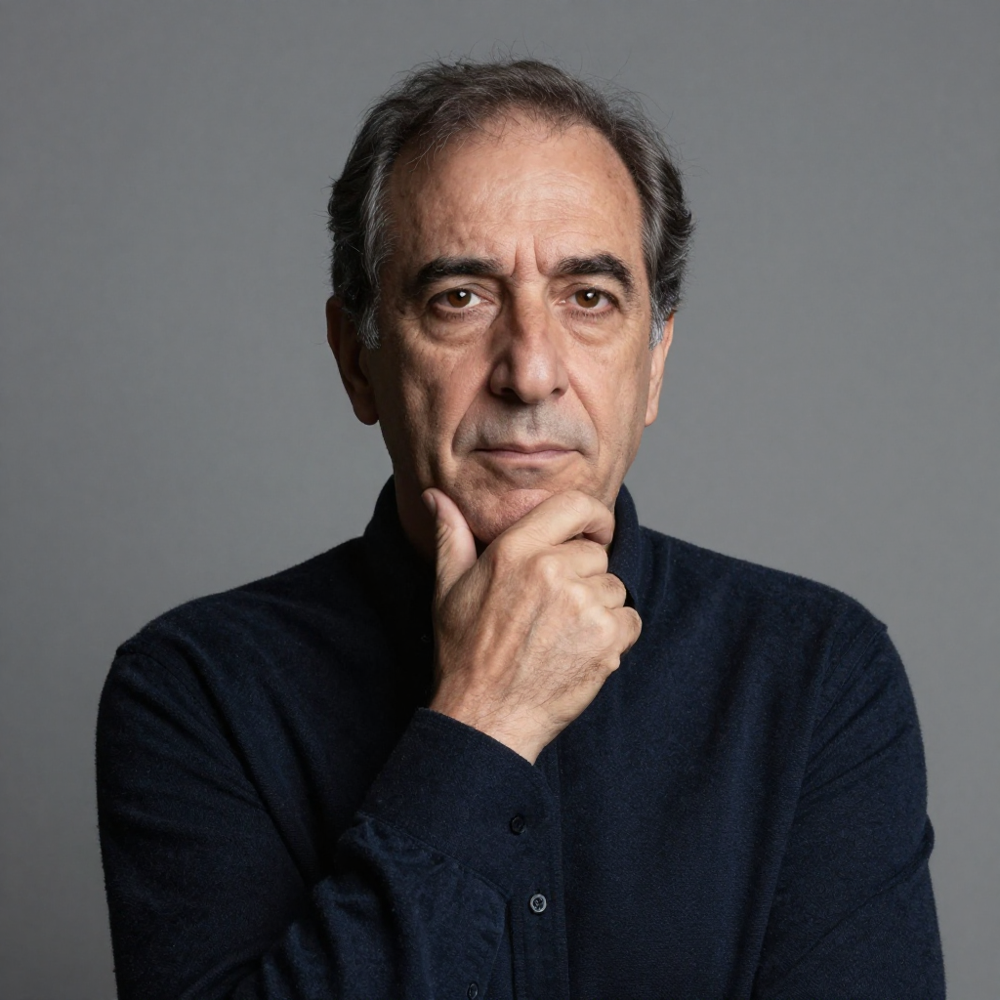
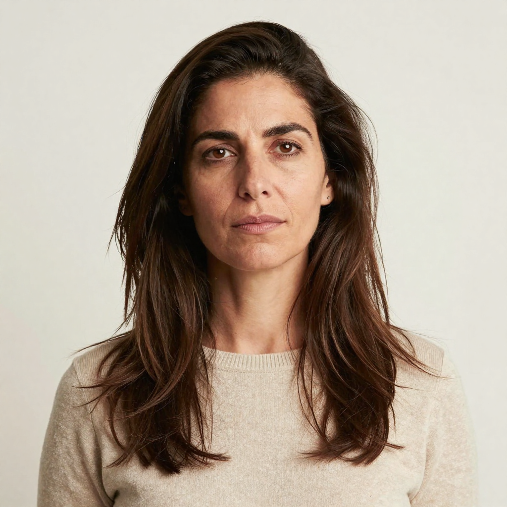
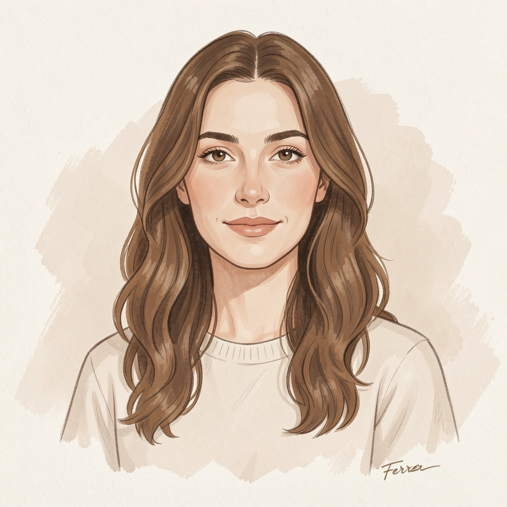
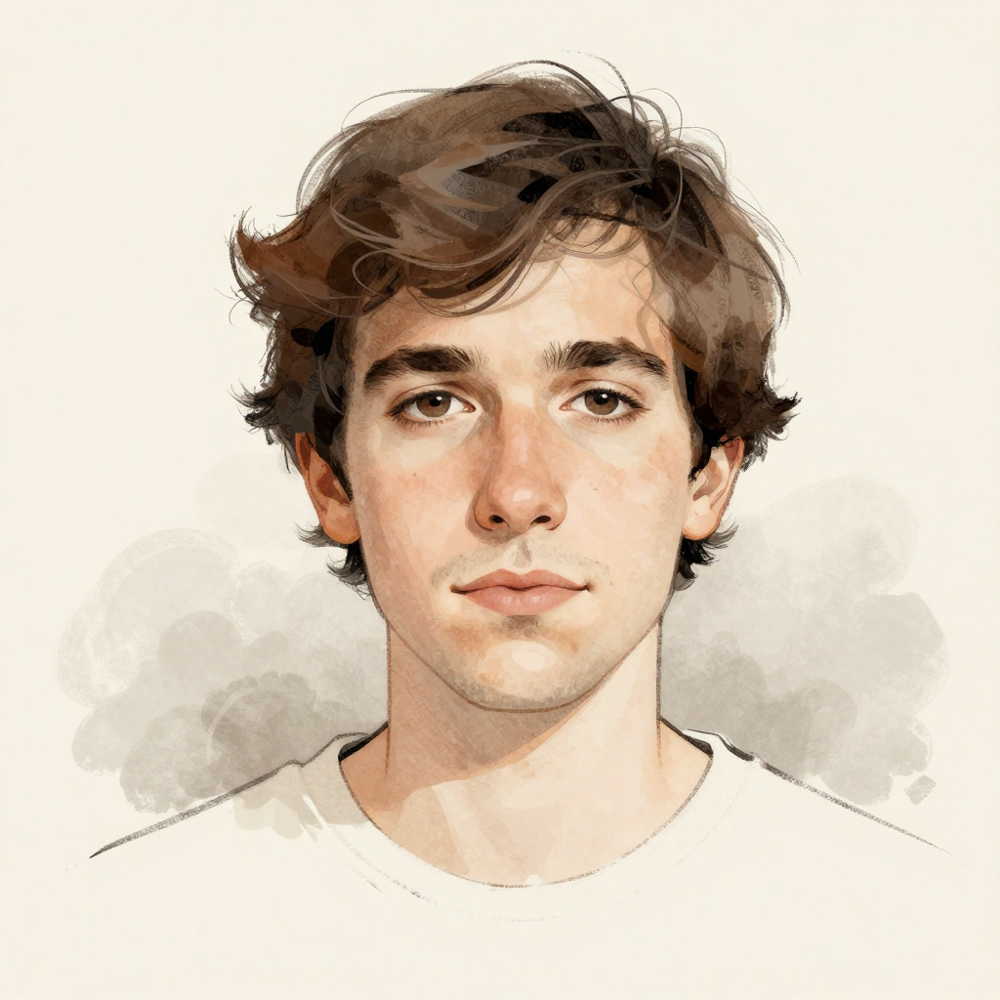
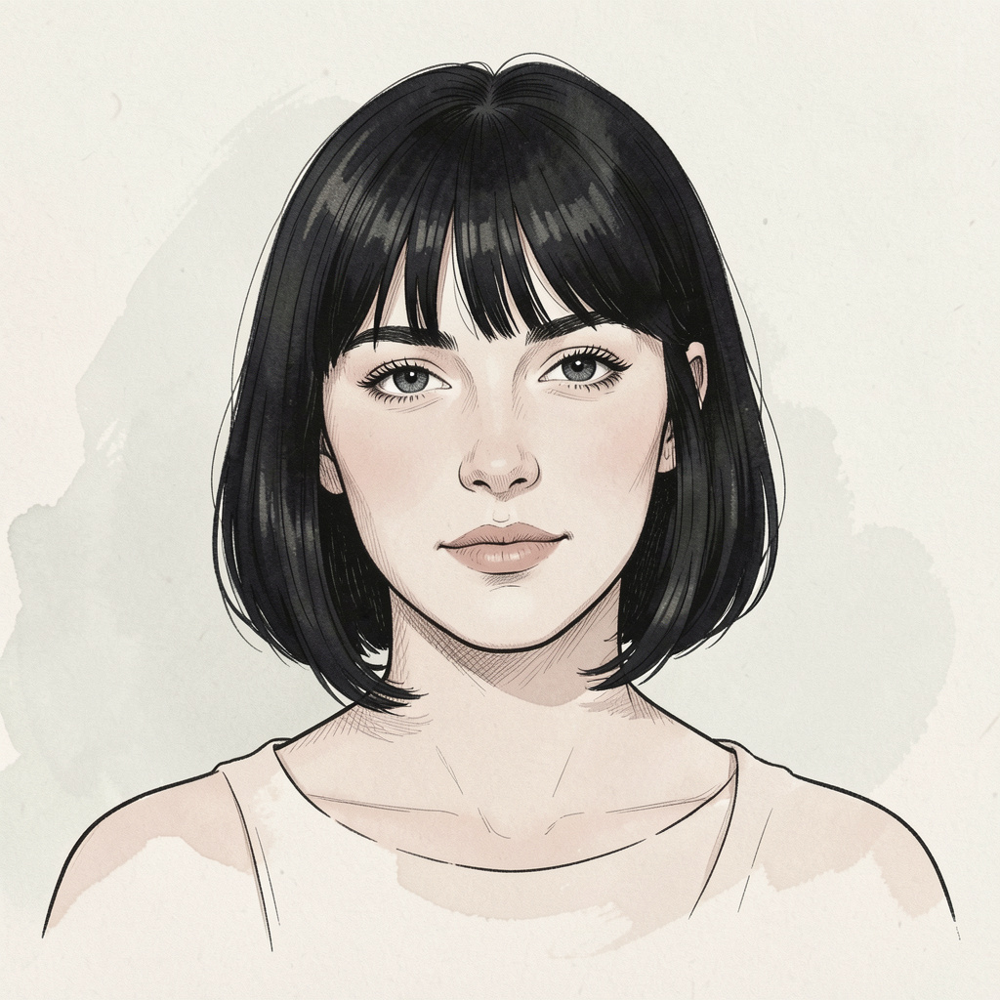
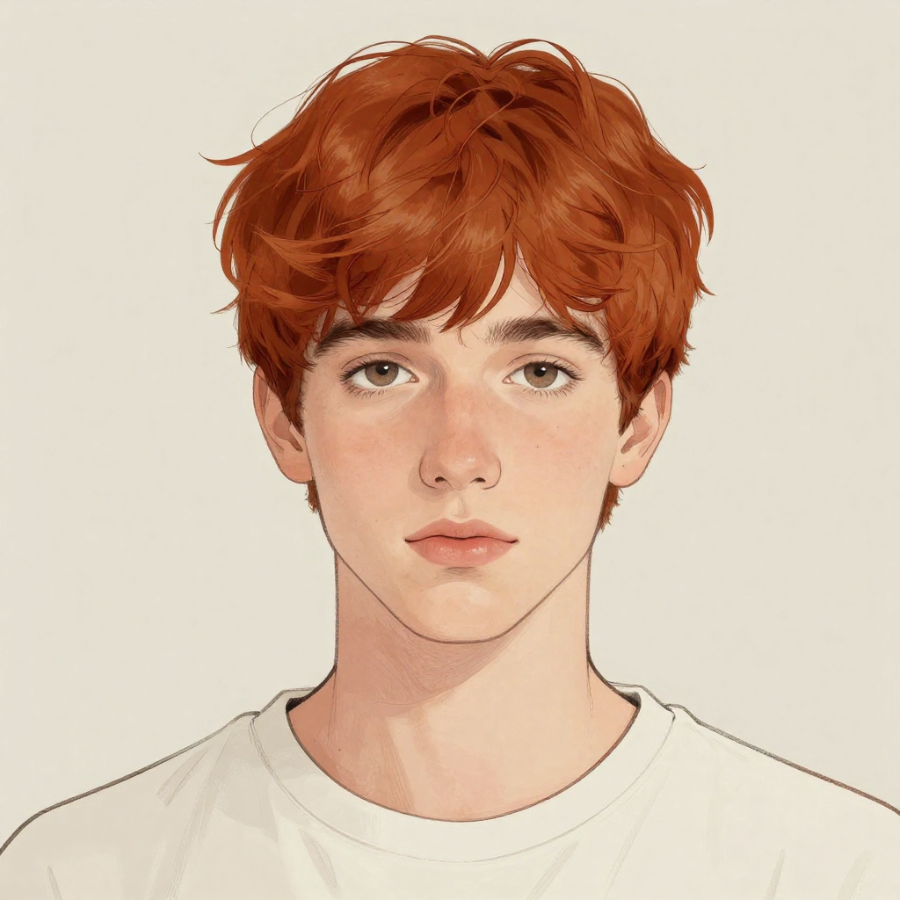

Autores
Autores destacados
Martín Beltrán
Nacido el 12 de marzo de 1985
Escritor interesado en los silencios, la introspección y los espacios emocionales no dichos. Su obra explora la espera y la contemplación como formas de resistencia cotidiana. Compagina la escritura con talleres de creación literaria

Julián Correa
Nacido el 27 de septiembre de 1979
Ensayista centrado en el tiempo, la paciencia y la experiencia de la pausa. Su escritura reflexiva bebe de la filosofía y la observación de lo cotidiano. Cree en la lentitud como una forma de pensamiento crítico.

Elena Pardo
Nacida el 19 de junio de 1987
Autora interesada en las relaciones humanas y el equilibrio emocional. Su prosa es precisa, contenida y profundamente empática. Escribe sobre la distancia necesaria para comprender al otro y a uno mismo.
Irene Salgado
Nacida el 8 de enero de 1992
Narradora que trabaja los límites entre lo íntimo y lo social. Sus textos abordan la identidad, la memoria y los márgenes de la experiencia diaria. Forma parte de nuevas corrientes de narrativa contemporánea.
Ilustradores destacados

Lucía Ferrer
Nacida el 14 de abril de 1990
Ilustradora especializada en narrativa visual y atmósferas íntimas. Su trabajo combina trazos suaves y composiciones limpias para explorar emociones contenidas. Colabora en proyectos de novela gráfica y edición independiente.

Daniel Ríos
Nacido el 22 de agosto de 1986
Ilustrador y diseñador gráfico centrado en la relación entre imagen y texto. Su estilo sobrio y conceptual acompaña relatos contemporáneos y ensayos visuales. Interesado en el silencio gráfico y la síntesis formal.

Clara Montes
Nacida el 3 de diciembre de 1993
Ilustradora emergente con un lenguaje visual delicado y expresivo. Trabaja temas como la memoria, la identidad y la vida cotidiana desde una mirada poética. Ha participado en publicaciones culturales y editoriales alternativas.

Adrián Soler
Nacido el 9 de febrero de 1988
Ilustrador enfocado en la novela gráfica y el libro ilustrado. Su obra destaca por el uso del color contenido y la narrativa visual pausada. Explora los límites entre lo íntimo y lo social a través del dibujo.